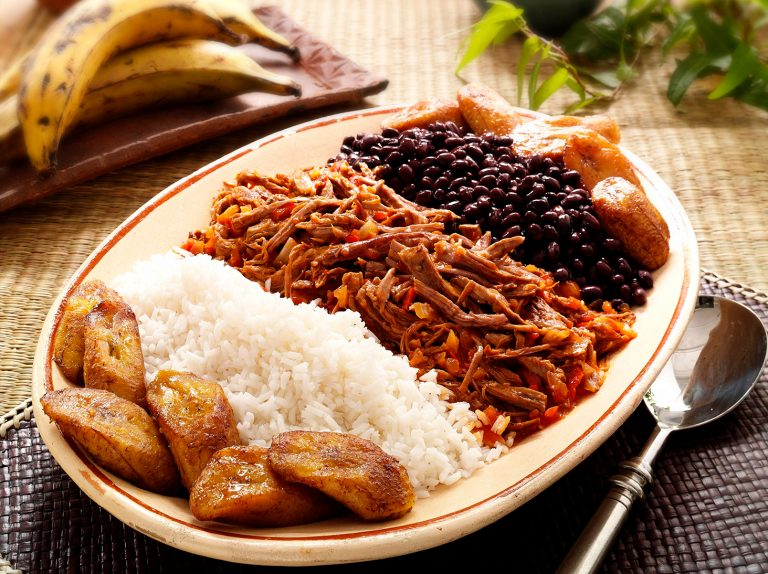

PABELLON
RETURN

INGREDIENTS
- 1 Flank Steak (about 2 lbs., cut in 4 pieces)
- 1 Onion (roughly chopped)
- 2 packets GOYA Beef Bouillon
- 1 quart Water
- 2 cups Onion (chopped)
- 1 cup Red Bell Peppers (chopped)
- 2 teaspoons GOYA Minced Garlic (or 4 cloves fresh garlic, minced)
- 2 tablespoons GOYA Corn Oil
- 8 ounces GOYA Tomato Sauce
- 1 packet GOYA Sazon (without Annatto)
- 1/2 teaspoons GOYA Leaf Oregano
- 1/2 teaspoons GOYA Adobo (with Cumin)
- 15 ounces GOYA Black Bean Soup (heated)
- 11 ounces GOYA Frozen Ripe Plantain (cooked according to package directions)
- 3 cups CANILLA Extra Long Grain Rice (cooked)